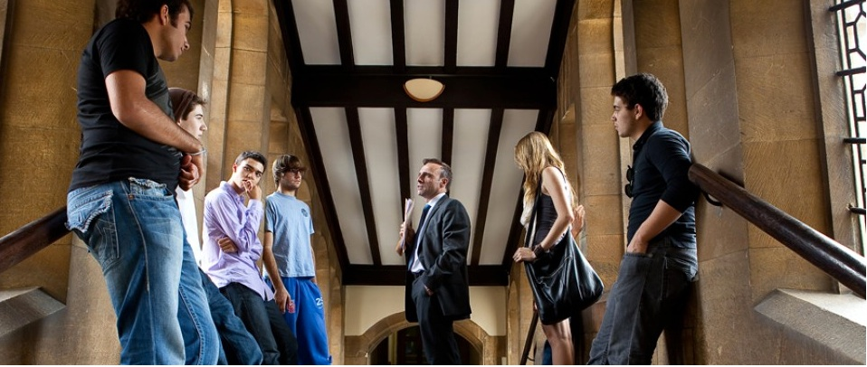
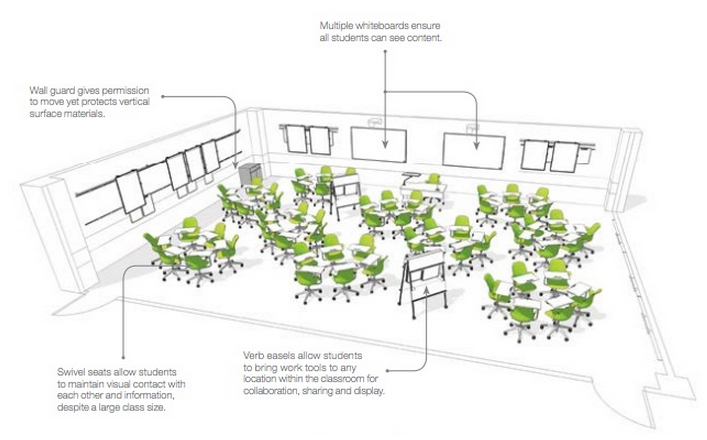
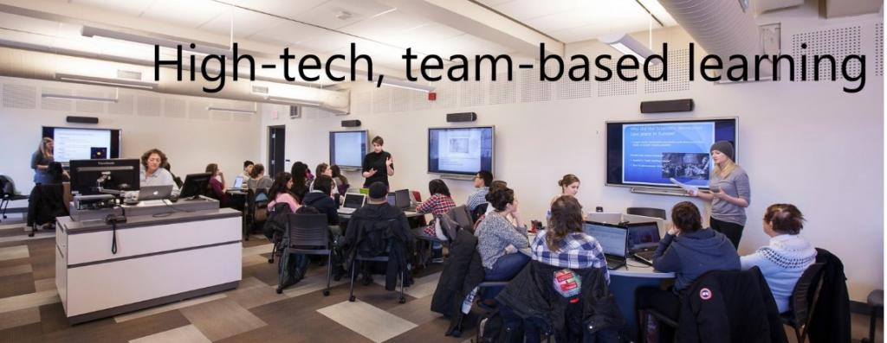

10.5 O futuro do campus


Imagem: © Cambridge Advanced Studies Program, Cambridge University, U.K., 2015

À medida que uma parte crescente do ensino migra para o ambiente digital, inclusive para os estudantes presenciais, torna-se prioritário refletir sobre a função do ensino presencial e a utilização dos espaços no campus.
10.5.1 Identificar as características únicas do ensino presencial num mundo digital
Sanjay Sarma, Diretor do Gabinete de Aprendizagem Digital do MIT, procurou identificar, na conferência LINC 2013 do MIT, a diferença entre a aprendizagem presencial e a digital, focando especificamente nos MOOCs. Delineou a distinção entre os MOOCs (cursos abertos a qualquer pessoa e focados no conhecimento de referência de áreas científicas) e a "magia" da vivência no campus, a qual apresenta contornos distintos dos da experiência digital (Sarma, 2013).
Sarma referiu que esta dinâmica é complexa de definir formalmente, apontando contudo para:
- as conversas informais nos corredores entre professores e funcionários;
- as atividades práticas de engenharia desenvolvidas em cooperação pelos estudantes fora das aulas convencionais e laboratórios agendados;
- a aprendizagem informal que se desenvolve entre estudantes em estreita proximidade física.
Delineiam-se outras características implícitas na apresentação de Sarma:
- o elevado padrão acadêmico dos estudantes admitidos no MIT, que estimula o grupo a alcançar níveis superiores de exigência;
- a importância das redes de relações sociais estruturadas pelos estudantes no MIT, que propiciam oportunidades de carreira subsequentes.
O acesso facilitado e frequente a laboratórios físicos constitui um argumento forte para a singularidade do campus, dada a complexidade de transposição deste recurso para o digital, embora se assista a desenvolvimentos em laboratórios remotos e simulações. O estabelecimento de redes de contatos profissionais e sociais que impulsionem a carreira subsequente surge igualmente como vantagem estrutural (ver as considerações no podcast de feedback da Atividade 10.2 sobre as "affordances únicas" do ensino presencial).
Caberá a cada leitor avaliar se estas características constituem de fato traços exclusivos da presencialidade ou se as vantagens do campus são mais específicas de instituições de elite de custo elevado e forte pendor seletivo. Para a maioria dos docentes, contudo, torna-se necessário identificar vantagens pedagógicas da presencialidade que apresentem caráter mais concreto e geral.
10.5.2 A lei da substituição equivalente
Entretanto, deve partir-se do pressuposto de que, sob a perspectiva estritamente pedagógica, a maioria das disciplinas pode ser ensinada com igual qualidade on-line ou presencialmente, princípio que designo por lei da substituição equivalente. Isto significa que outras variáveis — tais como custos, conveniência do corpo docente, estabelecimento de relações sociais, competências tecnológicas do formador, perfil de estudantes ou a envolvente física do campus — condicionarão com maior intensidade a opção pela modalidade presencial ou digital do que as exigências acadêmicas dos conteúdos. Trata-se de argumentos legítimos para valorizar a vivência presencial.
Paralelamente, existirão áreas em que se delineia uma justificativa pedagógica consistente para a aprendizagem em moldes físicos e de manipulação direta. Por outras palavras, urge identificar as exceções à lei da substituição equivalente. Estas características pedagógicas singulares do ensino presencial carecem de investigação científica e de maior fundamentação teórica, dado que não vigora atualmente uma metodologia consolidada para evidenciar a singularidade do campus em termos de resultados de aprendizagem. A premissa assenta no pressuposto de que o campus assegurará melhores dinâmicas letivas simplesmente por constituir o modelo tradicional de ensino. Cumpre reformular a questão: qual é a justificativa pedagógica para a existência do campus, num cenário em que os estudantes podem realizar a maior parte do estudo on-line?
10.5.3 O impacto do ensino on-line nos espaços físicos do campus
Esta questão ganha relevância face ao impacto que a transição para modelos híbridos ou mistos produzirá na concepção dos espaços de estudo. Sob determinados aspectos, esta dinâmica constitui uma variável crítica para o planejamento de escolas e universidades.
10.5.3.1 Repensar a concepção das salas de aula
Com a transição de modelos baseados em aulas expositivas para dinâmicas de aprendizagem interativa, urge repensar os espaços físicos de estudo e a articulação entre pedagogia, tecnologia digital e design ambiental. Para motivar a deslocação dos estudantes ao campus face à oferta de atividades digitais flexíveis, as atividades presenciais devem apresentar valor acadêmico explícito. Se o objetivo do campus reside em potenciar a comunicação interpessoal e o trabalho colaborativo intenso, a instituição dispõe de espaços flexíveis e dotados dos recursos necessários para o efeito, salvaguardando que os estudantes pretenderão articular as ferramentas digitais com as atividades de sala de aula?
Em síntese, a integração tecnológica, o ensino híbrido e o objetivo de desenvolver competências para a era digital estão a impulsionar docentes e arquitetos a reformularem a sala de aula e os seus modelos de utilização.



A Steelcase, fabricante de mobiliário corporativo e escolar, desenvolve investigação sobre ambientes de estudo e delineia propostas avançadas sobre o impacto da aprendizagem digital na concepção das salas de aula. A sua página web de investigação e relatórios como Active Learning Spaces (Espaços de Aprendizagem Ativa) e Rethinking Space: Sparking Creativity (Repensando o Espaço: Estimulando a Criatividade) constituem referências úteis para o planejamento de escolas de todos os níveis de ensino.
No relatório Active Learning Spaces, a Steelcase refere:
Os espaços formais de aprendizagem mantiveram-se inalterados durante séculos: uma sala retangular preenchida por filas de carteiras voltadas para o professor e para o quadro... Consequentemente, estudantes e docentes debatem-se hoje com limitações decorrentes de salas obsoletas que não apoiam a integração dos três pilares de um ambiente de estudo de sucesso: pedagogia, tecnologia e espaço físico.
A mudança inicia-se na pedagogia. As metodologias de ensino são diversas e dinâmicas. Entre disciplinas, e por vezes no decorrer do próprio tempo letivo, os espaços de sala de aula exigem reconfigurações. Devem, por isso, adaptar-se com flexibilidade aos diferentes perfis de docência e estudo. Os docentes devem dispor de apoio para desenvolver novas estratégias metodológicas adequadas a estes cenários.
A tecnologia exige integração criteriosa. Os estudantes de hoje utilizam com naturalidade os recursos digitais para expor, partilhar e apresentar informações. Superfícies verticais para exibição de conteúdos, múltiplos suportes de projeção e quadros brancos sob diversas configurações constituem elementos essenciais a ponderar na sala de aula.
O espaço condiciona a aprendizagem. Mais de três quartos das disciplinas integram dinâmicas de debate coletivo e cerca de 60% incorporam o trabalho em pequenos grupos, percentagens que registam crescimento contínuo. As metodologias interativas exigem espaços em que todos visualizem os conteúdos e consigam interagir com os seus pares. Cada lugar na sala deve constituir um local de observação privilegiado. À medida que as instituições adotam metodologias construtivistas, o modelo do orador centralizado dá lugar ao facilitador de proximidade. Os espaços físicos devem apoiar a pedagogia e as tecnologias da sala, permitindo ao professor deslocar-se entre equipes para prestar feedback e orientar a aprendizagem colaborativa. A pedagogia, a tecnologia e o espaço físico, quando integrados de forma articulada, constituem o ecossistema de aprendizagem ativa.
No relatório Rethinking Space: Sparking Creativity, Andrew Kim, investigador de educação da Steelcase, refere:
O trabalho criativo desenvolve-se com maior eficácia em espaços de aprendizagem que apoiam a dinâmica do trabalho de equipe e a partilha de informações.



A concepção das salas de aula deve considerar que os estudantes realizam parcelas crescentes do seu estudo no ambiente on-line (fora do espaço de sala). A sala física deve funcionar como suporte para acessar, trabalhar, compartilhar e demonstrar conhecimentos adquiridos dentro e fora do recinto. Caso o espaço se organize em núcleos de mobiliário para suportar grupos de trabalho, estes módulos exigirão eletrificação para ligação de dispositivos, acesso à internet sem fios e capacidade de projeção partilhada de conteúdos (rede interna da sala). Os estudantes necessitam de espaços reservados ou salas de apoio (breakout spaces) para trabalhos individuais ou de grupo. Quando dispõem de ambientes estruturados nestes moldes, os docentes adotam com naturalidade metodologias ativas.
10.5.3.2 O impacto das salas de aula invertidas e da aprendizagem híbrida no design espacial
Estes desenhos espaciais partem do pressuposto de turmas de dimensão reduzida. Contudo, assiste-se ao redesenho de turmas numerosas através de modelos híbridos como as salas de aula invertidas. Mark Valenti (2013), da empresa audiovisual Sextant Group, refere: "Assistimos ao início do fim das salas de aula expositivas tradicionais."
No entanto, face às condicionantes orçamentais atuais, não se deve assumir que o tempo presencial destas disciplinas de grande dimensão decorrerá em pequenas salas individuais (escasseiam salas de pequena dimensão para acomodar turmas que frequentemente superam os mil inscritos). Serão necessários espaços amplos passíveis de organização em pequenos grupos de trabalho, reconfiguráveis com facilidade em plenário. O que estes espaços amplos não devem apresentar são as filas rígidas de carteiras fixas que caracterizam os anfiteatros tradicionais.
A Steelcase desenvolve igualmente estudos sobre espaços de trabalho para docentes. Se a instituição planeja a criação de áreas comuns de estudo para os alunos (learning commons), por que não situar os gabinetes dos docentes nessas mesmas áreas, em vez de em edifícios isolados? Justifica-se a integração dos gabinetes dos professores com espaços de docência abertos.
10.5.3.3 O impacto nos planos de investimento em infraestrutura
Compreende-se o interesse comercial de fornecedores de mobiliário nestes desenvolvimentos. Desenha-se uma oportunidade de mercado relevante. Contudo, as instituições de ensino debatem-se com restrições financeiras e, antes de avançarem para investimentos, deverão ponderar:
- que perfil de campus será necessário para os próximos 20 anos, face à consolidação dos modelos híbridos e on-line;
- qual a relevância de investir em estruturas físicas quando os estudantes realizam parcelas significativas do estudo no ambiente on-line.
Apresentam-se oportunidades para definir prioridades de inovação no design de espaços:
- no planejamento e edificação de novos campi ou edifícios principais;
- na reformulação de disciplinas numerosas do primeiro e segundo anos: teste de uma sala de aula protótipo adaptada e avaliação de resultados; caso se revele bem-sucedida, expansão progressiva a outras turmas;
- em departamentos ou programas com forte integração de modelos híbridos ou on-line, que deverão reter prioridade no financiamento de designs espaciais;
- todas as renovações e aquisições de mobiliário escolar devem estar sujeitas a uma revisão prévia dos designs de sala.
O ponto central assenta no pressuposto de que o investimento em espaços físicos deve ser norteado pela decisão de alterar as metodologias de ensino. Este processo exige a articulação de docentes, equipes de TI, designers instrucionais, técnicos de manutenção, arquitetos e fornecedores de mobiliário. Como referiu Winston Churchill: "Nós moldamos os nossos edifícios e, depois, eles moldam-nos a nós." Disponibilizar aos docentes ambientes de estudo flexíveis e bem concebidos estimula a inovação metodológica; confiná-los a caixas retangulares com carteiras em fila produzirá o efeito oposto.
Sobretudo, as instituições devem reavaliar os seus planos de investimento imobiliário a longo prazo. Especificamente:
- necessitaremos de edifícios adicionais de salas de aula e anfiteatros se os estudantes realizarem até metade do estudo on-line ou em salas invertidas?
- dispomos de espaços que permitam a grupos de estudantes trabalhar em equipe e reconvir em plenário com facilidade?
- possuímos infraestruturas tecnológicas que facilitem o estudo presencial e digital de forma integrada, permitindo compartilhar e registrar o trabalho desenvolvido no campus?
- revelar-se-ia mais vantajoso investir na remodelação dos espaços existentes do que edificar novas estruturas?
As instituições necessitam de formular uma reflexão estratégica sobre o ensino on-line, o seu impacto nas práticas presenciais e a natureza da experiência do campus que visam proporcionar aos estudantes. É esta reflexão que deve orientar os investimentos em edifícios e mobiliário.
10.5.4 Repensar a função do campus
Caso se aceite o princípio da substituição equivalente para diversas finalidades acadêmicas, regressamos à questão da deslocação do estudante ao campus. Se a aprendizagem pode desenvolver-se on-line com qualidade e comodidade, o que oferece a instituição no campus para justificar a viagem diária dos alunos? Este constitui o desafio estrutural que o ensino on-line coloca.
Não se trata de definir quais tarefas letivas realizar na sala ou laboratório, mas de analisar a função social, cultural e humana da escola ou universidade. Em diversas universidades urbanas, os estudantes limitam-se a deslocar-se para assistir às aulas expositivas, utilizando eventualmente espaços comuns nos intervalos e regressando a casa. O crescimento em escala das instituições tendeu a diluir estas dimensões de vivência cultural e comunitária.
A aprendizagem on-line e híbrida abre a oportunidade de repensar a função global do campus e as dinâmicas de sala de aula num cenário de ubiquidade de recursos digitais. Seria viável transitar todos os processos letivos para o on-line com redução de custos, contudo cumpre avaliar os elementos humanos e pedagógicos que se perderiam nesse percurso.
Referências
Sarma, S. (2013) The Magic Beyond the MOOCs Boston MA: LINC 2013 conference
Steelcase Education (undated) Active Learning Spaces Michigan: Grand Rapids
Steelcase Education (undated) Rethinking Space: Sparking Creativity Michigan: Grand Rapids
Valenti, M. (2013), in Williams, L., ‘AV trends: hardware and software for sharing screens, University Business, June
Atividade 10.5 Redesenhando o seu espaço de sala de aula
Quando as rotinas administrativas condicionam a pedagogia: Trabalhei numa escola em que, diariamente, as carteiras eram dispostas em filas alinhadas voltadas para o quadro pelo pessoal de manutenção, que manifestava desagrado caso os móveis fossem deixados noutra configuração ao final do dia. Consequentemente, eu despendia tempo das aulas a organizar as carteiras em módulos de grupo com os alunos e a repô-las no final do dia (sendo jovem na altura, evitava confrontar as regras da instituição).
- Se desenhasse de raiz um espaço de aprendizagem direcionado para um máximo de 40 estudantes, que configuração teria a sala, considerando as tecnologias e metodologias letivas atualmente disponíveis?
- Caso gerisse uma turma de 200 alunos numa aula expositiva e pretendesse alterar as metodologias de ensino, de que forma reestruturaria a disciplina e de que perfil de espaços necessitaria?
Principais Ideias-Chave do Capítulo 10
1. Delineia-se um continuum da aprendizagem baseada em tecnologia, desde o ensino presencial "puro" até programas inteiramente on-line. Cada docente necessita de definir o posicionamento das suas disciplinas no âmbito deste continuum.
2. Escasseiam dados científicos e teorias consolidadas para nortear esta escolha, embora se registre conhecimento acumulado sobre as mais-valias e limites do ensino digital. Falta, em particular, uma análise com base em evidências das vantagens e limites da presencialidade num cenário de ubiquidade de recursos digitais.
3. Na ausência de enquadramentos teóricos robustos, sugerem-se quatro variáveis de reflexão na escolha da modalidade letiva e na articulação de dinâmicas on-line e presenciais em modelos híbridos:
-
as caraterísticas e necessidades dos estudantes;
-
a estratégia pedagógica preferida, em termos de métodos e resultados de aprendizagem;
-
os requisitos de apresentação dos conteúdos da matéria, divididos em (a) conteúdos conceituais e (b) competências práticas;
-
os recursos de suporte à docência (incluindo a disponibilidade de tempo do formador).
4. A transição para modelos híbridos ou mistos exige repensar o papel do campus e a concepção dos espaços físicos de apoio ao estudo.